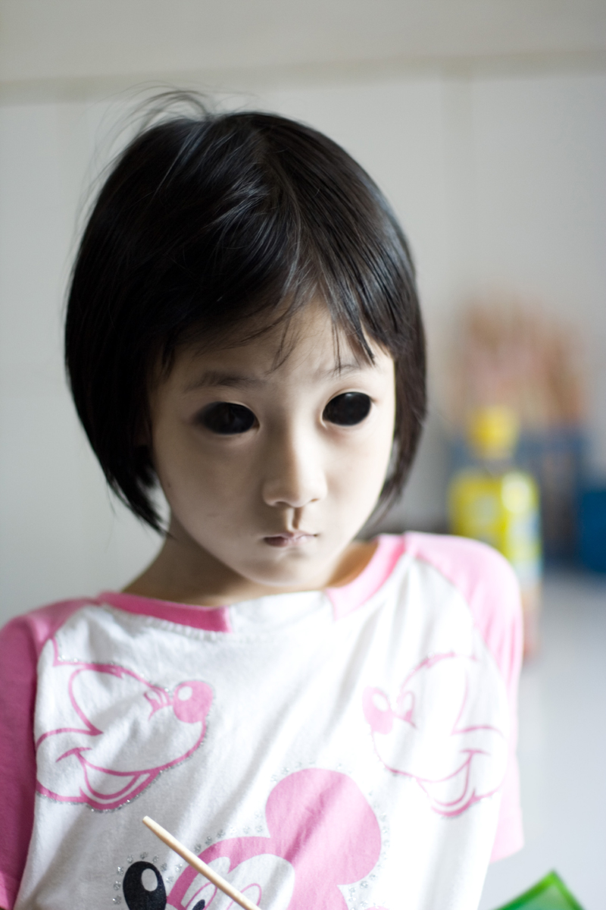
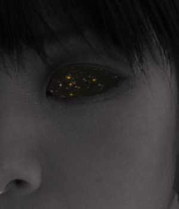

SCP-134
項目等級：Safe
特殊收容措施：SCP-134目前居住於一個尺寸為六乘八米，經過特殊佈置的人型生物保管隔間內。因為SCP-134完全失明，房間內的家具必須配備特殊安全措施。 SCP-134已經相當習慣於房間內所有物體的位置，並且基本通過記憶來辨認方向。 SCP-134的房間目前包括：
． 一張帶床墊的單人床。
． 一套粉色的床上用品，包括床單，被子和印有“Hello Kitty”圖案的枕頭。 （注：儘管失明，SCP-134可以感覺到印刷圖案並且顯示出了對這種圖案的偏好。）
． 一個衣櫥和一個帶抽屜的櫃子，內含超小號兒童衣物。所有的抽屜都帶有盲文及凸出印刷的英文標籤。
． 一套玩偶之家玩具，包括玩偶和內部陳設。
． 八隻填充動物玩具（三隻貓，兩隻狗，一隻長頸鹿，一隻海豚以及一隻熊貓）
． 一套兒童盲文讀物。
． 一把椅子和一張桌子。
． 一套手工藝台，包括玩具黏土和積木。

描述：SCP-134是一個█到█歲之間的亞洲女孩，黑色短髮，體型單薄。對像在很多方面都表現正常並且擁有一個人類兒童的一切生理需要（食物、睡眠等）。然而SCP-134的眼部是兩個黑洞，覆蓋著一層外觀與人類眼角膜相似的透明薄膜；眼科測試顯示這層薄膜的彈性是普通人類眼角膜的150到200倍。 SCP-134沒有眼瞼所以不會眨眼，也不能通過此黑色區域視物。對SCP-134的眼球後方的檢查失敗了，因為沒有發現視網膜。在普通光照條件下，它們呈現為漆黑，但是在黑暗中，在其中可以看到非常暗淡的光芒。進一步的長時間曝光攝影和光放大測試表明光芒實際上來自星球和星系，清晰可見，似乎通過SCP-134的眼眶可以一定程度地望向深空。基金會天文學家███████博士的研究正在進行中，但是時至今日沒有識別出任何天體。

光譜分析顯示遠程終端週期性地[數據刪除]新位置；原因目前未知。變化的最短間隔是六天，最長間隔是五個星期。截止目前沒有觀察到過進行中的轉移。
SCP-134沒有顯示出任何有敵意的行為，而且似乎對自己不自然的狀況一無所知。 SCP-134顯現了與患有高度自閉症的兒童相似的症狀，包括固定的行為模式和對變化的抵觸。針對這點，為SCP-134配備了一位兒童教育專家以解決這些問題；專家提出適當的兒童教育需要一個私人名稱，並且暱稱SCP-134為“Stella”。 SCP-134已經掌握了被以SCP編號稱呼和進行身體測試之間的聯繫，並且在之前稱呼她“Stella”的人以編號稱呼她時表現出沮喪和消極合作。因此，不建議人員以她的名字稱呼她除非想把與SCP-134之間的互動限制在談話層面。
專家隨後被解僱，因其對於被分配給他的SCP產生了過於親近的興趣。任何被發現稱呼SCP-134為‘Stella’的人員都會被嚴厲訓斥。
當被問及她的眼睛時，SCP-134聲稱對於其畸形沒有任何認知，即使是在被允許感受正常的人類眼睛作為比較之後。